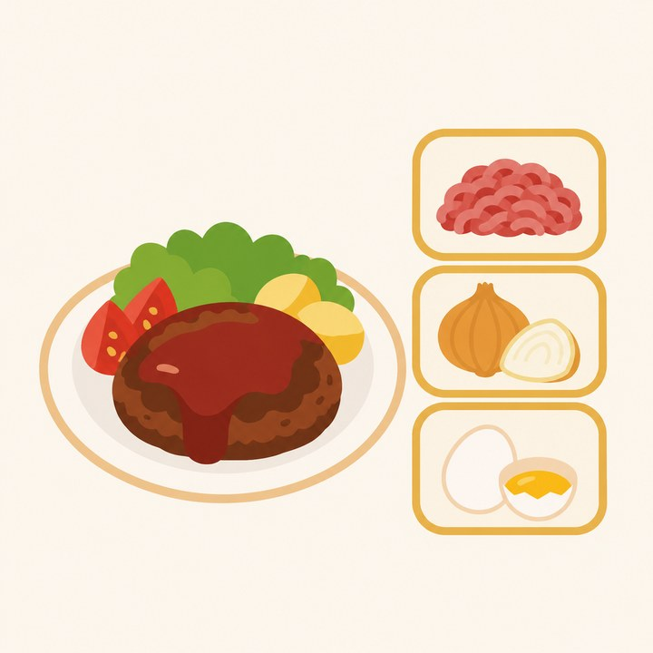

iPhone・iPad・Android の原価の帳面
1品がいくらでできて、
いくらで売ればいいか。
仕入れ値をそのまま入れると（税込・税抜、8% と 10% がまじっても）、歩留まりとソースなどの中間品まで含めて、1品と1人前（1個）の原価・原価率・粗利を出します。目標の原価率を入れれば、税込の売価を逆に出します。
App Store・Google Play で配信予定買い切りで全部の機能が使えます。アプリ内課金・サブスクリプション・広告はありません。

こんな困りごとのために
iPad と同じものが見られない
iCloud Drive の書類として、自分の iPhone と iPad で同じものを開けます。スタッフには控えのファイルを渡せます（同時に直すことはできません）。
仕入れの単位が半端
1パック = 300 g・卵 1個 = 60 g のように、単位の換算を自分で足せます。
歩留まりが入れられない
材料ごとに歩留まり（可食部の割合）を入れて、使う量から原価を出します。
仕入れ値が上がった
仕入れ値を変えると、その材料を使う全部のレシピが変わり、原価率がいくつになるかを一覧にします。
CSV が文字化けする
BOM つきの UTF-8 で書き出すので、Excel で開いても文字化けしません。材料の CSV も取りこめます。
サブスクで突然ログアウト
買い切りで、アカウントもありません。
できること
| 材料 | 仕入れ値（税込・税抜・8%／10%）・量と単位・自分で足す単位・歩留まり・仕入先 |
|---|---|
| レシピ | 材料と中間品の使う量・何人前（何個）・原価・1人前・原価率・粗利 |
| 売価 | 税込の売価から原価率／目標の原価率から税込の売価（端数は切り捨て・四捨五入・切り上げから選ぶ） |
| データ | iCloud Drive の書類・毎日の控え・CSV と PDF・アカウントなし・解析と広告なし |
使い方・プライバシーポリシー・利用規約もご覧ください。